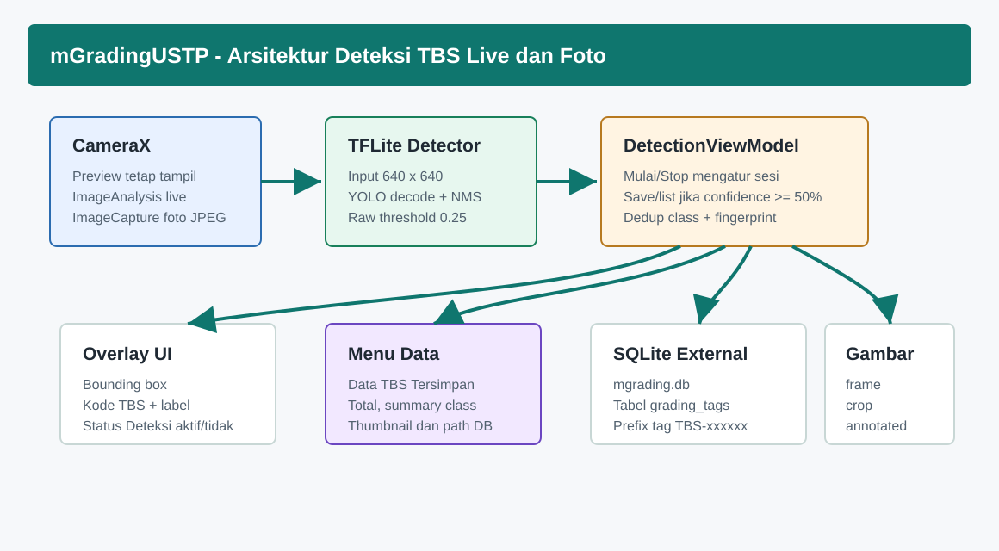
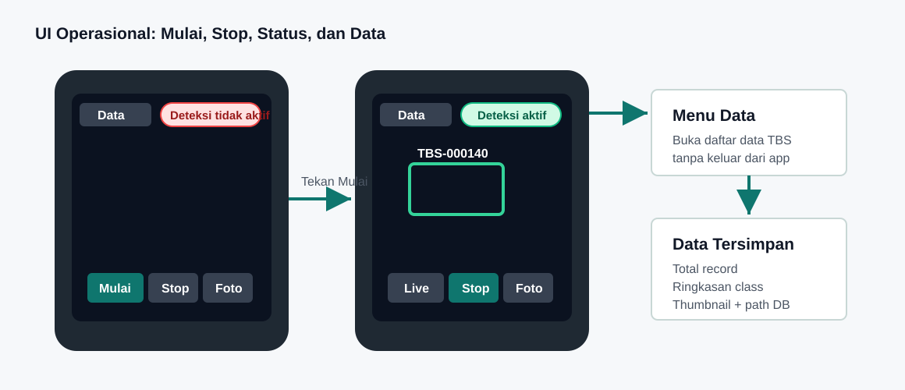
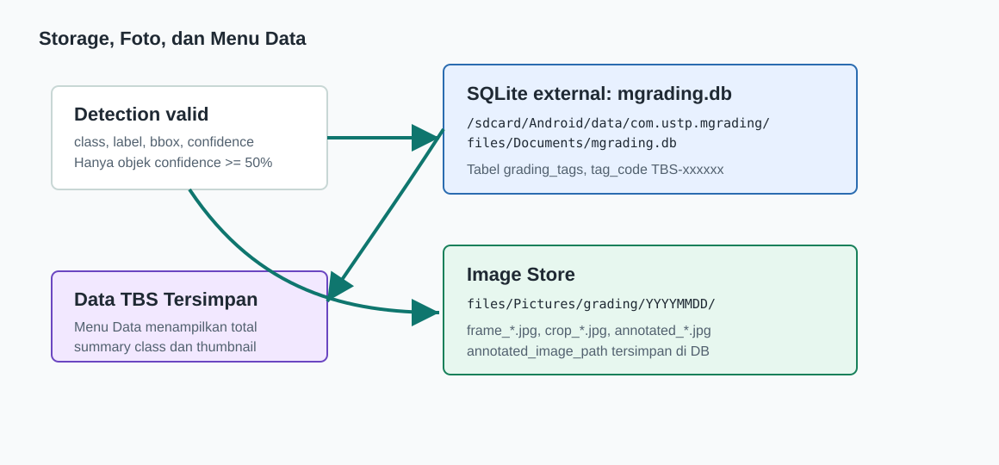

mGradingUSTP - Dokumentasi Perencanaan Aplikasi Mobile TBS
Project mGradingUSTP - diperbarui 9 Juni 2026
mGradingUSTP - Dokumentasi Perencanaan Aplikasi Mobile TBS
Tanggal dokumen: 9 Juni 2026
Lokasi project: /mnt/pioneer/Project_GradingTph_Mobile
1. Tujuan Project
mGradingUSTP adalah aplikasi Android offline untuk membantu user lapangan mendeteksi grading Tandan Buah Segar (TBS) dan berondolan menggunakan kamera mobile. App mendukung dua cara kerja: live detection dari kamera dan detection dari foto.

2. Skenario Utama User
| Tahap | Aksi user | Output app |
|---|---|---|
| Buka app | User membuka kamera | Preview tampil, status Deteksi tidak aktif. |
| Mulai live | User tekan Mulai | Status menjadi Deteksi aktif; app mulai membaca frame. |
| Baca TBS satu per satu | User mengarahkan kamera ke tiap TBS | Jika confidence >=50%, tag TBS-xxxxxx muncul dan data tersimpan. |
| Pindah objek | User mengarah ke TBS lain | Tag baru dibuat jika objek belum pernah tersimpan. |
| Kembali objek lama | User mengarah lagi ke objek yang sama | Tag lama langsung muncul, record baru tidak dibuat. |
| Zoom out | User melihat seluruh tumpukan TBS | Beberapa objek valid tampil dengan tag masing-masing. |
| Ambil foto | User tekan Foto | Foto beranotasi disimpan. |
| Audit data | User tekan Data | Form/list data TBS tersimpan ditampilkan. |
| Berhenti | User tekan Stop | Deteksi berhenti dan status menjadi Deteksi tidak aktif. |

3. Kebutuhan Fitur
| Fitur | Prioritas | Status |
|---|---|---|
| Live camera detection manual start/stop | P0 | Implemented |
| Status deteksi kanan atas | P0 | Implemented |
| Auto tag TBS dengan threshold 50% | P0 | Implemented |
| Simpan frame/crop/foto anotasi | P0 | Implemented |
SQLite external mgrading.db | P0 | Implemented |
| Menu dan form daftar data tersimpan | P0 | Implemented |
| Dedup objek sama | P0 | Implemented dengan fingerprint |
| Export/sinkronisasi data keluar aplikasi | P1 | Belum menjadi scope saat ini |
| Training ulang model dengan data lapangan tambahan | P1 | Direkomendasikan setelah pengumpulan data |
4. Rancangan UX Operasional
- Tombol Mulai wajib ditekan sebelum deteksi berjalan agar app tidak langsung menyimpan data saat user baru membuka kamera.
- Tombol Stop menghentikan deteksi tanpa menutup kamera.
- Status kanan atas memberi feedback cepat: Deteksi aktif atau Deteksi tidak aktif.
- Tombol Data berada di layar kamera agar user bisa audit hasil tanpa mencari file database manual.
- Kontrol bawah memakai safe area agar tidak tertimpa navigation bar Android.
5. Rencana Data dan Storage

| Data | Lokasi |
|---|---|
| SQLite | /sdcard/Android/data/com.ustp.mgrading/files/Documents/mgrading.db |
| Gambar | /sdcard/Android/data/com.ustp.mgrading/files/Pictures/grading/YYYYMMDD/ |
| Tag | TBS-000001, TBS-000002, dan seterusnya |
| Record utama | grading_tags |
6. Rencana Validasi Lapangan
| Uji | Kriteria berhasil |
|---|---|
| Objek tunggal | Tag muncul saat confidence >=50%. |
| Objek banyak | Lebih dari satu TBS bisa diberi tag pada satu frame/foto. |
| Objek sama | Tidak membuat record duplikat saat kamera masih melihat objek yang sama. |
| Objek lama | Tag lama muncul saat user kembali ke objek yang sudah pernah tersimpan. |
| Stop detection | Setelah Stop, tidak ada deteksi dan tidak ada record baru. |
| Data page | Total data, summary kelas, dan thumbnail tampil. |
| Storage | File mgrading.db dan gambar bisa ditemukan di external app-specific storage. |
7. Roadmap Lanjutan
| Tahap | Rencana |
|---|---|
| v1.1 | Export CSV/ZIP untuk database dan gambar. |
| v1.2 | Filter tanggal, session, dan label pada halaman Data. |
| v1.3 | Sinkronisasi server jika perangkat online. |
| v1.4 | Training ulang TFLite dari data real lapangan yang sudah dikumpulkan. |